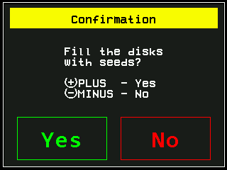
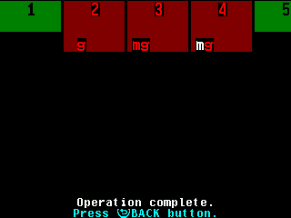

Remplir les disques de semences
Faire tourner les disques à graines d'un semoir monograine à moteurs de doseur jusqu'à ce que chaque disque contienne des graines, pour que le semis commence dès le premier mètre — comment lancer l'opération et lire le résultat.
Cela ne concerne que les semoirs monograines à moteurs électriques de doseur pour les semences en mode « Precise » (précis). Sans moteurs de semences dans le profil, ou dans un autre mode, l'élément de menu n'est pas affiché.
Lorsque les disques sont entraînés par des moteurs électriques, ils restent vides tant que les moteurs ne tournent pas. Si vous démarrez avec des disques vides, les premiers mètres de chaque rang ne reçoivent rien : chaque disque doit d'abord prendre des graines et les amener jusqu'au point de chute. Le remplissage fait tourner les disques machine à l'arrêt, pour que le semis commence dès le premier mètre.
Arrêtez la machine. Tant qu'elle avance, l'élément est masqué.
Sur l'écran d'accueil, appuyez sur « MENU ». Sélectionnez le premier élément, « Fill the disks with seeds » (remplir les disques de semences), et appuyez sur « MENU ». Il est ouvert à tous les niveaux d'accès.
Le panneau demande une confirmation. Appuyez sur « PLUS » ou touchez « Yes » (oui). « MINUS », « No » (non), « BACK » ou un toucher à côté de la fenêtre annule.

La question avant la rotation des disques. Surveillez les vignettes. Chaque moteur fait tourner son disque à 4 tr/min de l'arbre entraîné jusqu'à ce que le capteur de graines de son rang enregistre la première graine. Pendant l'opération, la ligne du bas vous indique que « BACK » l'interrompt.

L'opération en cours : la vignette 1 est terminée et verte, les autres tournent encore. Lorsque tous les moteurs ont terminé, le panneau émet trois bips courts et affiche « Operation complete. » (opération terminée). Lisez les vignettes à loisir, puis appuyez sur « BACK » pour revenir au menu principal.
Pour arrêter plus tôt, appuyez sur « BACK » : chaque moteur s'arrête aussitôt, reprend la logique de semis et l'écran se ferme. Vous pouvez recommencer immédiatement. Sur cet écran, seul « BACK » fonctionne ; les autres boutons et touchers ne font rien.
Lire les vignettes

| Vignette | État |
|---|---|
| Gris foncé, pleine hauteur | Attend son tour — huit moteurs seulement tournent en même temps. |
| Jaune, partie haute | En cours : le disque tourne. |
| Vert, partie haute | Terminé : le capteur de graines a enregistré une graine. |
| Rouge foncé, pleine hauteur, numéro rouge vif | Échec : le disque n'a pas pu être rempli. Les lettres en donnent la raison. |
Un moteur échoue si aucune graine n'est enregistrée en 1,25 tour d'arbre — environ dix-neuf secondes. Un moteur qui signale un défaut est arrêté et déclaré en échec aussitôt ; un moteur hors surveillance ne tourne pas et compte comme en échec. Les moteurs supplémentaires sans capteur de graines propre font tourner leurs disques mais sont signalés en échec, car aucune graine ne peut être vue. Les moteurs d'engrais ne participent que s'ils fonctionnent eux aussi en mode « Precise », chacun associé au capteur d'engrais de même numéro.
Lettres sur une vignette en échec
Les lettres se trouvent toujours aux mêmes endroits — m à gauche, g au milieu, s à droite — et le rouge signifie un défaut, le blanc signifie hors surveillance.

| Lettre | Signification |
|---|---|
| m rouge | Un défaut du moteur pendant l'opération. |
| m blanc | Le moteur est hors surveillance et ne peut pas tourner. |
| g rouge | Le capteur de graines n'a vu aucune graine pendant que le disque tournait. |
| s rouge | Un défaut du capteur de graines pendant l'opération. |
| s blanc | Le capteur de graines est hors surveillance, ou le moteur n'a pas de capteur de graines associé. |
Si le capteur de graines est hors surveillance, un moteur en état de marche fait tout de même tourner le disque d'environ un tour et quart, de sorte que le disque se remplit bien — mais le panneau signale un échec, car il n'a jamais vu de graine.
Votre machine fait quelque chose que cette page n'explique pas ? Écrivez à support@agriwelt.com — un ingénieur vous répond.